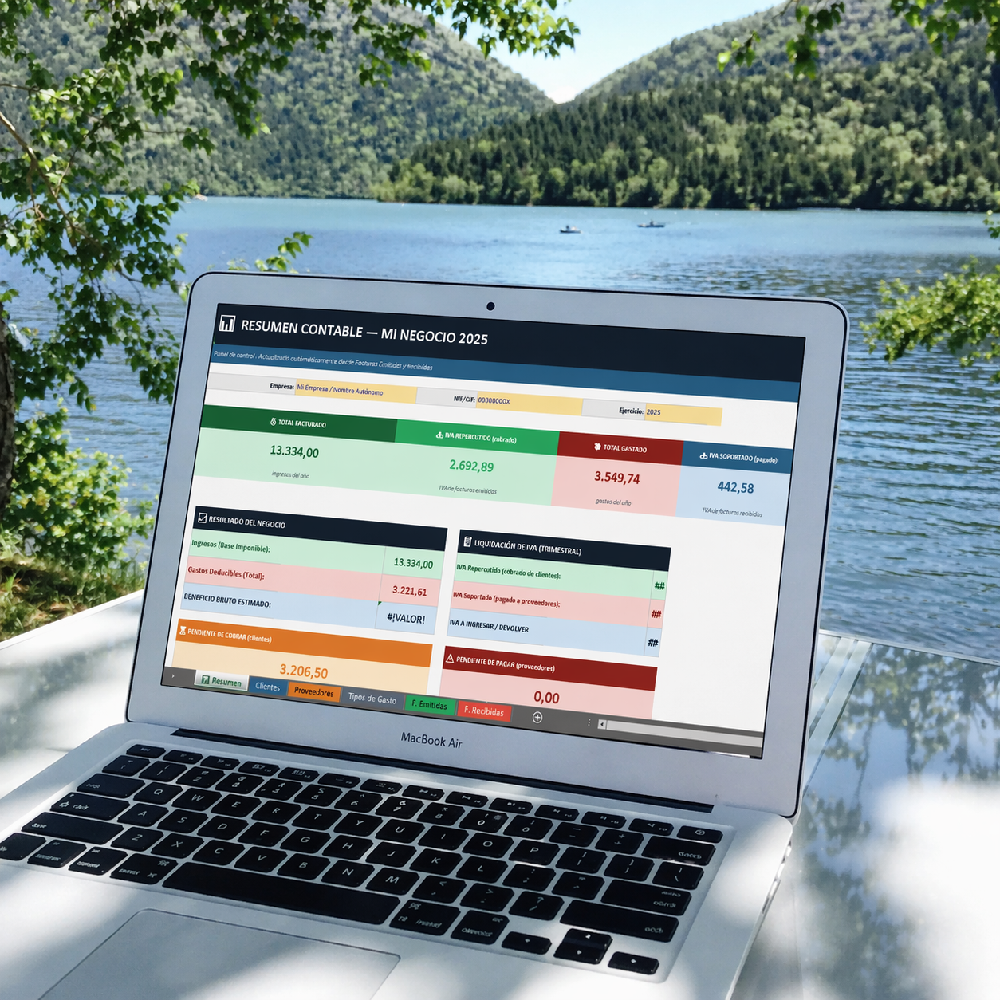

El dato solo no basta. Importa entender qué lo está empujando y dónde puede sostenerse.
Tus números no solo deben cuadrar. Deben hablar.
Herramientas empresariales con lógica de análisis para ordenar, visualizar y comprender mejor una PyME.
Hoy la entrada es por plantillas empresariales. La visión de fondo es construir una plataforma capaz de leer con más profundidad la información financiera del negocio.
Orden
Visualización
Lectura inicial del negocio
Del dato al criterio

Herramientas reales
Claridad que acompaña decisiones reales
Ver la presión financiera antes de que explote permite decidir con más margen y menos urgencia.
Reserva temprana
Ver plataforma de análisis
Si quieres seguir de cerca la futura capa de análisis y lectura automatizada, ya puedes dejar tu correo.
¿Por qué ADS Veris?
Deja de improvisar con tus números o depender de herramientas que no te dicen nada.
ADS Veris está hecho para PyMEs que quieren claridad, velocidad y herramientas empresariales con lógica de análisis.
Alternativa tradicional
ERP Tradicional
- Inversión: mensualidades, implementación y cobros por usuario
- Tiempo: configuración lenta y curva de aprendizaje más pesada
- Uso: muchas funciones que una PyME pequeña no siempre necesita
- Lectura: registra y controla, pero no siempre ayuda a interpretar con claridad
Tu mejor opción
Solución recomendada
ADS Veris
- Inversión: pago accesible por plantilla, sin suscripciones complejas
- Velocidad: descarga inmediata y uso rápido
- Claridad: herramientas diseñadas para ordenar, visualizar y entender mejor el negocio
- Enfoque: pensado para PyMEs que necesitan criterio, no solo registro
Haz tu primera compra y llévate un 30% de descuento
en cualquiera de las plantillas que selecciones
Ni contador, ni ERP, ni promesa inflada.
El contador se enfoca en cumplimiento. El ERP se enfoca en operación. ADS Veris se enfoca en orden, visualización y lectura inicial del negocio.
9 plantillas listas
Compra asistida
Novedades por correo
Propuesta de valor
No solo registres tu negocio. Entiéndelo.
Orden para decidir
Una PyME puede vender, cobrar y moverse todos los días, pero aun así operar sin una lectura real. Nuestras plantillas ordenan lo esencial para que la decisión no dependa solo de intuición o memoria.
Visualización con criterio
Diseñamos estructuras que ayudan a ver dónde se tensiona la caja, qué rubro drena margen, qué producto empuja ventas y qué tendencia merece seguimiento antes de tomar una decisión.
Herramientas sobrias
Sin promesas vacías ni complejidad innecesaria. Hoy entregamos herramientas útiles y claras; mañana esa base puede crecer hacia una lectura más profunda del negocio.

Lectura visual
Ver tendencias con claridad.
Cuando una tendencia se ve bien, se entiende más rápido. ADS Veris convierte datos dispersos en una lectura visual que orienta decisiones comerciales, financieras y operativas.

Trabajo fino
Detecta focos sin ruido.
No se trata de llenar tablas. Se trata de identificar rápido dónde mirar: margen, caja, ventas, inventario o estructura. Ese foco ahorra tiempo y mejora la calidad de la decisión.

Acceso simple
Empieza simple y ordenado.
Tu empresa no necesita una estructura gigante para empezar a leer mejor su negocio. Necesita una herramienta clara, bien pensada y lista para usarse desde hoy.
Plantillas destacadas
Ver tienda completa
Una base seria para leer mejor tu PyME.
Productos escalonados para resolver una necesidad puntual o construir una base completa de lectura empresarial.
Evolución de producto
La base actual son plantillas. La evolución natural es una lectura más profunda del negocio.
Ordenar y visualizar mejor
Las plantillas ayudan a estructurar ventas, gastos, caja, inventario y estados para que la empresa deje de mirar números aislados.

Interpretar con más profundidad
La evolución natural es una plataforma capaz de leer bases financieras con mayor contexto y acercar una experiencia más parecida al trabajo de un analista.
Reserva tu lugar para esa siguiente etapa
Actualmente el foco principal sigue siendo el catálogo, pero la reserva ya puede empezar a construirse desde hoy.

La reserva quedó preparada a nivel visual. Aquí luego se conectará la base real.
Porque una empresa mejora cuando por fin logra leer lo que sus números llevan tiempo diciendo.
ADS Veris no compite por parecer complejo. Compite por ser útil. Tomamos preguntas concretas del negocio y las traducimos en una estructura que ayuda a mirar mejor ventas, caja, gastos, inventario y resultados.
Eso permite pasar del dato aislado a una lectura más clara: dónde se gana, dónde se pierde, dónde se aprieta la operación y dónde conviene actuar primero.
Conocer nuestra historia- Menos tiempo buscando qué mirar y más tiempo decidiendo.
- Menos hojas sueltas y más estructura para comparar períodos.
- Más claridad para conversar de negocio dentro del equipo.

Criterio empresarial
Leer mejor no es decorar cifras. Es entender qué decisión necesita el negocio hoy.